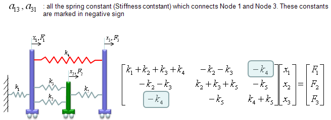

| FEM(Finite Element Method) - Complicated Spring |
|
In this example, I will introduce a little bit more complicated model than the previous one and I will also show you a new method to construct a Matrix for the system. The method we used in previous example was more relevant to real physical characteristics of the system. But it will be very tedius to construct the matrix via going through every details of physical characteristics. In this example, I will introduce another widely used method but easier to construct a mathematical model. (Note : I got this specific example model from MIT opensource : http://www.youtube.com/watch?v=oNqSzzycRhw and try to describe in my own words).
The model which was given in the lecture linked above is as follows. (You would see this kind of example from various sources with just a little bit of modification, but I intentionally used the model as it is from the above link so that you can learn the same thing from different source (the link above and this page). Of course, the final outcome will be the same but a little bit different way of description)
we have three carts connected each other and a fixed point by five springs. This system will be described by the following matrix equation. See the matrix is 3 x 3 matrix and the size of the matrix determined by the number of carts in the model and we call each of the carts as a "Node" in this section. You would notice the size of Matrix is determined by the number of nodes.
Now the question is to determine each of the elements of the matrix according to the condition given in the model. Let me give you the answer key first and let's go through each of the steps to realize the matrix. Just with a brief look, you will notice following characteristics. i) All the values on the diagonal line of the matrix are positive values. ii) All the values not on the diagonal line of the matrix are negative values. iii) Values not on the diagonal line of the matrix are symetric. (e.g, a21 = a12, a31 = a13 etc).
Now let's look into the steps of how we get the values for each of the element.
a11 is obtained as shown below. The meaning of a11 is the summation of the spring constants (stiffness constants, k) which are connected to Cart 1 (node 1). As shown below, all the springs connected to Node 1 are shown in red. As you see, spring 1,2,3,4 are connected to node 1. So the value becomes k1+k2+k3+k4.
a22 is obtained as shown below. The meaning of a22 is the summation of the spring constants (stiffness constants, k) which are connected to Cart 2 (node 2). As shown below, all the springs connected to Node 2 are shown in red. As you see, spring 2,3,5 are connected to node 2. So the value becomes k2+k3+k5.
a33 is obtained as shown below. The meaning of a33 is the summation of the spring constants (stiffness constants, k) which are connected to Cart 3 (node 3). As shown below, all the springs connected to Node 3 are shown in red. As you see, spring 4,5 are connected to node 3. So the value becomes k4+k5.
a12 and a21 are obtained as shown below. The meaning of a12 and a21 is the summation of the spring constants (stiffness constants, k) which are connecting Cart 1 and Cart 2 (node 1 and node 2). As shown below, all the springs connecting the two nodes are shown in red. As you see, spring 2,3 are connecting the two nodes. So the value becomes -k2-k3. But notice that these values has negative sign.
a23 and a32 are obtained as shown below. The meaning of a23 and a32 is the summation of the spring constants (stiffness constants, k) which are connecting Cart 2 and Cart 3 (node 2 and node 3). As shown below, all the springs connecting the two nodes are shown in red. As you see, spring 5 is connecting the two nodes. So the value becomes -k5. But notice that these values has negative sign.
a13 and a31 are obtained as shown below. The meaning of a13 and a31 is the summation of the spring constants (stiffness constants, k) which are connecting Cart 1 and Cart 3 (node 1 and node 3). As shown below, all the springs connecting the two nodes are shown in red. As you see, spring 4 is connecting the two nodes. So the value becomes -k4. But notice that these values has negative sign.

This is more complicated than the previous example, but I hope you might feel easier than the previous one because the steps were described in a kind of mechanical procedure without much of mathematics and physics. If you feel that you would be able to write a computer program to create this kind of matrix, then you can say you fully understood these steps.
|